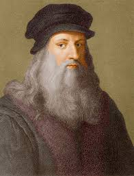

Leonardo da Vinci
Leonardo Di Ser Piero Da Vinci
(Bu ses hakkında telaffüz) (yardım-bilgi) (15 Nisan 1452 - 2 Mayıs 1519), Rönesans döneminde yaşamış İtalyan hezarfen, döneminin önemli bir filozof, astronomu, mimarı, mühendisi, mücidi, matematikçisi, anatomisti, müzisyeni, heykeltaraşı, botanisti, jeoloğu, kartoqrafı, yazarı ve ressamıdır. En tanınmış yapıtları Vitruvius Adamı (1490-1492), Mona Lisa (1503-1507) ve Son Akşam Yemeği'dir (1495-1497) Rönesans sanatını doruğuna ulaştırmış, yalnız sanat yapısına değil, çeşitli alanlardakı araştırmaları ve buluşlarıyla da tanınan, dünyanın gelmiş geçmiş en büyük sanatçılarından ve dehalarında biri kabul edilmektedir.
Son Akşam Yemeği
SON AKŞAM YEMEĞİ YA DA SON YEMEK
[İngilizce: The Last Supper(Dı lest Sapır), İtalyanca : Il Cenacolo(İl Çenakolo) ya da L'Ultima Cena (Lultima Çena)]. Hrsityian inanışına göre İsa'nın çarmıha gerilmesinden önceki akşam havarileriyle yediği son yemek. Bu yemek sirasinda yapdığı konuşmanın uzunca anlatıldığı Yuhanna Kitabında İsa Mesi onlara, kendisi aralarindan ayrıldıqdan sonra gelecek olan Paraklitle teselli bulmalarını söyler.
Son Akşam Yemeği'inde İsa Ve Havarileri Kutsal Kase'den Şarap içiyorlar Ve Ekmek Yiyorlardı.